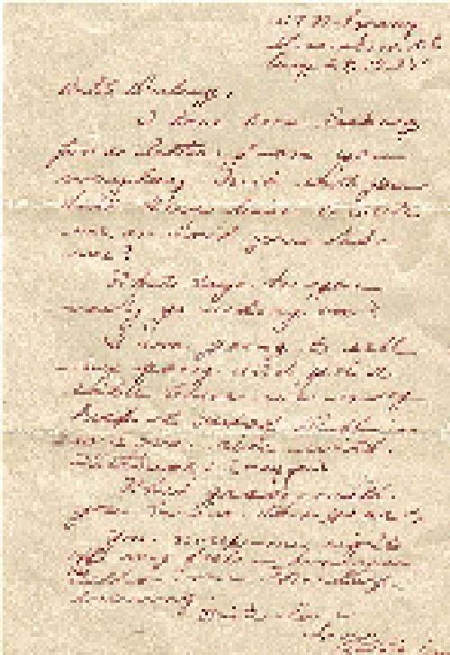

A carta

A carta traz uma notícia: seu avô Agostinho faleceu e deixou a fazenda para você.
Você vai até o vale e encontra a casa velha, o terreno abandonado e um bilhete em cima da mesa:
"Cuide bem da terra. E das pessoas. Um ano é o suficiente para descobrir quem você é."
Você decide ficar um ano para ver se a fazenda vale a pena.